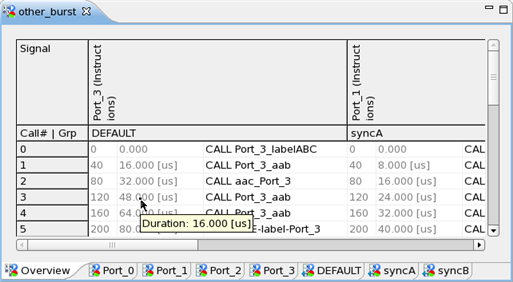

Multiport Burst Editor
A multiport editor is one of the pattern tools. It gives access to multiport bursts and the individual port bursts. Port bursts are pattern sequences for a specific port (group of pins). A port burst is always part of a multiport burst.
You can open any number of multiport burst editors. Every instance of the multiport burst editor provides an Overview page plus one or more tabbed pages. These tabbed pages display the individual port bursts and the sync groups.

- The
 Overview page is always visible and shows all port burst on one page. In expanded mode
the Overview page can show start cycle and start time per call as additional columns (must be
set as Appearance option on the Pattern Tool preference page). The
tooltip of these columns will show cycle count and duration per call.
Overview page is always visible and shows all port burst on one page. In expanded mode
the Overview page can show start cycle and start time per call as additional columns (must be
set as Appearance option on the Pattern Tool preference page). The
tooltip of these columns will show cycle count and duration per call. - The
 port burst pages show the individual port bursts. The port burst tabs are ordered
alphabetically. These pages can be hidden.
port burst pages show the individual port bursts. The port burst tabs are ordered
alphabetically. These pages can be hidden. - The
 sync group pages (named DEFAULT unless differently named) show the port bursts per
assigned synchronization group. Multiple sync group tabs are ordered alphabetically. These pages
can be hidden.
sync group pages (named DEFAULT unless differently named) show the port bursts per
assigned synchronization group. Multiple sync group tabs are ordered alphabetically. These pages
can be hidden. - The blue-white marker indicates a current primary and expandable item.
- The red-green marker indicates an item with results.
Main toolbar icons
To a large extend, the icons for the multiport burst editor functions on the main toolbar are identical to those for the Pattern Editor. That includes the red cell coloring and icons indicating failure data. The following icons are provided for the multiport burst editor in addition or have an additional function:
Icon |
Function |
|---|---|

|
Expands / collapses the current editor page. The other pages of the editor are not affected. The expanded mode shows
To activate the icon you must execute the testflow. |
Available only for the burst pages of a multiport burst editor. Enables / disables the expanding ( |
|

|
Hides / shows (toggles) the sync group tabs (pages) on the current multiport burst editor. |

|
Hides / shows (toggles) the port burst tabs (pages) on the current multiport burst editor. |
Functional changes
- Introduced in SmarTest 7.1.3